Comprehensive Documentation of Statistical Scaling Analyses Using KEGG Pathways with R² Quality Filtering
This study investigates the relationship between bacterial genome size and functional gene content across different environments, using R²-filtered power-law scaling analyses to focus on high-quality fits:
Statistical Scaling Analyses: Power-law scaling relationships between genome size and KEGG pathway counts, with environment-specific deviations quantified using Z-statistics. Only fits with R² ≥ 0.05 are included, ensuring robust scaling relationships.
R² Quality Filtering: All analyses are restricted to environment×category combinations where the power-law fit explains at least 5% of the variance (R² ≥ 0.05), filtering out poor-quality fits that may not represent true scaling relationships.
Key Findings: - 99% Prevalence Threshold: 29 KEGG pathways analyzed across 2,164 high-quality genomes - R² Filtering: Only environment×category combinations with R² ≥ 0.05 are included (492 combinations for pathways, ~68-92 unique categories depending on data type) - Scaling Exponents: Most pathways show sub-linear scaling (α < 1), with significant environment-specific variation - Z-Score Recomputation: Z-scores are recomputed from filtered data, ensuring consistency between filtering and statistical comparisons - Robust Patterns: R² filtering reveals stronger, more reliable environment-specific scaling patterns by excluding noisy fits
Key Difference from Unfiltered Analysis: This analysis focuses exclusively on scaling relationships with R² ≥ 0.05, ensuring that all reported patterns represent statistically meaningful power-law relationships rather than noise. Z-scores are recomputed from the filtered data, providing more accurate quantification of environment-specific deviations.
Which scaling relationships are statistically robust (R² ≥ 0.05)?
What is the role of R² quality filtering in scaling analyses?
Are Z-scores more reliable when computed from filtered data?
What is the role of metabolism in environment-specific scaling?
Filtering Strategy: - Global Fits: Only pathways with global R² ≥ 0.05 are included - Environment-Specific Fits: Only environment×category combinations with R² ≥ 0.05 are included - Z-Score Recomputation: Z-scores are recomputed from filtered environment-specific and global fits - Category-Level Aggregation: Category-level Z-scores computed from recomputed environment-level Z-scores
Impact of Filtering: - Reduces Noise: Excludes fits where power-law model explains <5% of variance - Improves Reliability: Ensures all reported scaling relationships are statistically meaningful - Maintains Coverage: Most pathways and environments still have sufficient passing combinations for analysis - Enhances Interpretability: Focuses on robust patterns rather than marginal fits
The coefficient of determination (R²) quantifies how well the power-law model explains the variance in pathway counts:
Where: - $\text{SS}_{\text{res}}$ = residual sum of squares (unexplained variance) - $\text{SS}_{\text{tot}}$ = total sum of squares (total variance) - $y_i$ = observed log pathway count for genome $i$ - $\hat{y}_i$ = predicted log pathway count from power-law fit - $\bar{y}$ = mean log pathway count
R² Threshold (0.05): - R² ≥ 0.05: Power-law model explains at least 5% of variance - R² < 0.05: Power-law model explains <5% of variance (likely noise or non-power-law relationship) - Justification: 5% threshold balances statistical rigor with maintaining sufficient data for analysis
For each KEGG pathway, the global power-law fit is evaluated:
r_squared_pass_category_mapping_{data_type}_global.tsvResult: Only pathways with meaningful global scaling relationships are analyzed.
For each environment×category combination, the environment-specific power-law fit is evaluated:
r_squared_pass_category_mapping_{data_type}_env.tsvResult: Only environment×category combinations with meaningful scaling relationships are analyzed.
After filtering, Z-scores are recomputed from the filtered data:
env_scaling: Keep only environment×category combinations with R² ≥ 0.05global_params: Keep only categories with global R² ≥ 0.05Mathematical Formulation:
Where both $\alpha_{\text{env}}$ and $\alpha_{\text{global}}$ come from fits with R² ≥ 0.05.
Category-Level Z-Scores:
Where $n_{\text{envs}}$ is the number of environments with R² ≥ 0.05 for this category.
Key Advantage: Z-scores computed from filtered data are more reliable because they compare only high-quality fits, reducing noise in environment-specific comparisons.
Filtering Effects:
Coverage: Most pathways still have multiple passing environments
Improved Signal-to-Noise Ratio:
Focuses on relationships where genome size is a meaningful predictor
More Reliable Z-Scores:
Environment-specific deviations are more meaningful when comparing high-quality fits
Enhanced Interpretability:
Filters Applied:
genes_total > 0 (valid genomes)QC Results:
Figure 1A: QC Filtering Flowchart
Description: Flowchart showing genome counts at each QC step. Final dataset: 2,164 high-quality genomes after applying completeness (≥90%), contamination (≤5%), and gene count filters.
Interpretation: The filtering pipeline ensures high-quality data while maintaining sufficient sample size for robust statistical analyses. The majority of genomes pass QC, indicating good data quality.

Figure 1B: CheckM Completeness Distribution
Description: Histogram of CheckM completeness scores for raw vs. high-quality genomes.
Interpretation: The ≥90% threshold effectively filters out incomplete genomes while retaining the majority of the dataset. Most high-quality genomes have completeness >95%.

Figure 1C: CheckM Contamination Distribution
Description: Histogram of CheckM contamination scores.
Interpretation: The ≤5% threshold removes potentially contaminated assemblies. Most high-quality genomes have contamination <2%, indicating clean assemblies.
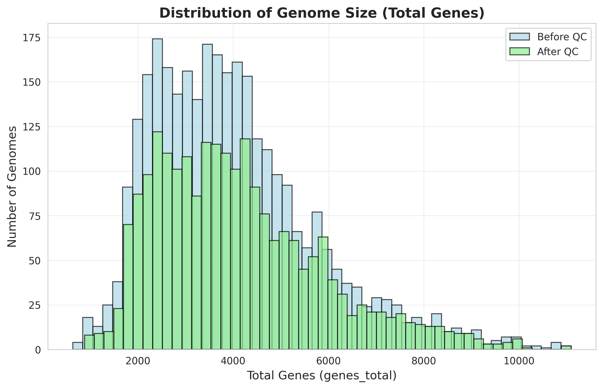
Figure 1D: Genome Size Distribution
Description: Distribution of total gene counts (genes_total) for raw vs. high-quality genomes.
Interpretation: QC filtering does not introduce systematic bias in genome size. The distribution spans ~500-10,000 genes, representing diverse bacterial genome sizes.

Figure 2A: Environment Counts After QC
Description: Bar plot showing number of genomes per environment after QC filtering.
Interpretation: Class imbalance exists: Aquatic (27.6%) and Terrestrial (22.1%) are largest, while Birds (1.7%) and Wastewater (2.9%) are smallest. This imbalance is addressed in prediction models using class weighting.
The core analysis models the relationship between genome size and gene content using a power-law scaling relationship:
Linear Space:
Log-Log Space (for regression):
Where:
- $n(g)$ = total number of genes in genome $g$ (genes_total)
- $n_c(g)$ = number of genes in functional category $c$ in genome $g$ (KEGG pathway count)
- $\alpha$ = scaling exponent (slope in log-log space)
- $\beta$ = scaling prefactor/offset (intercept in log-log space, stored as $\log(\beta)$)
For each KEGG pathway, we fit the model in log-log space using OLS:
Where: - $x_i = \log(n(g_i))$, $y_i = \log(n_c(g_i))$ - $\bar{x}, \bar{y}$ are sample means - $n$ = number of genomes
Standard Errors:
Where: - $\text{MSE} = \frac{\text{SS}_{\text{res}}}{n-2}$ (mean squared error) - $S_{xx} = \sum_{i=1}^{n} (x_i - \bar{x})^2$ - $\text{SS}_{\text{res}} = \sum_{i=1}^{n} (y_i - \hat{y}_i)^2$ (residual sum of squares)
R² (Coefficient of Determination):
Where $\text{SS}_{\text{tot}} = \sum_{i=1}^{n} (y_i - \bar{y})^2$ (total sum of squares).
R² Filtering: Only fits with R² ≥ 0.05 are included in downstream analyses.
99% Confidence Intervals:
Where $t_{0.995}$ is the 99th percentile of the t-distribution (approximately 2.576 for large $n$).
To quantify whether environment-specific scaling parameters differ significantly from global parameters, we compute Z-scores from filtered data:
Z-Score for Exponents:
Z-Score for Offsets:
Important: Both $\alpha_{\text{env}}$ and $\alpha_{\text{global}}$ come from fits with R² ≥ 0.05, ensuring that Z-scores compare only high-quality fits.
Interpretation: - $|Z| > 2$: Significant deviation from global parameter (approximately $p < 0.05$) - $|Z| > 3$: Highly significant deviation (approximately $p < 0.01$)
Category-Level Z-Statistics: For each KEGG pathway, we compute summary statistics across environments with R² ≥ 0.05: - $Z_{\alpha,\text{category}} = \sqrt{\frac{1}{n_{\text{envs}}} \sum_{j=1}^{n_{\text{envs}}} Z_{\alpha,j}^2}$ (root mean square) - $Z_{\beta,\text{category}} = \sqrt{\frac{1}{n_{\text{envs}}} \sum_{j=1}^{n_{\text{envs}}} Z_{\beta,j}^2}$
Where $n_{\text{envs}}$ is the number of environments with R² ≥ 0.05 for this category.
These quantify the overall variability of environment-specific parameters relative to the global fit, computed only from high-quality fits.
Raw Data (NCBI genomes)
↓
Script 01: Build master table + QC
↓
Script 02: Filter environments (≥20 genomes)
↓
Script 03: Fit global scaling (all environments combined)
↓
Script 04: Fit per-environment scaling + compute Z-scores
↓
R² Filtering: Filter fits with R² < 0.05
↓
Z-Score Recomputation: Recompute Z-scores from filtered data
↓
Script 05: Map KEGG pathway IDs to labels
↓
Script 06: Generate publication figures (rsqfiltered_ prefix)
Key Difference: R² filtering and Z-score recomputation ensure that all downstream analyses use only high-quality fits.
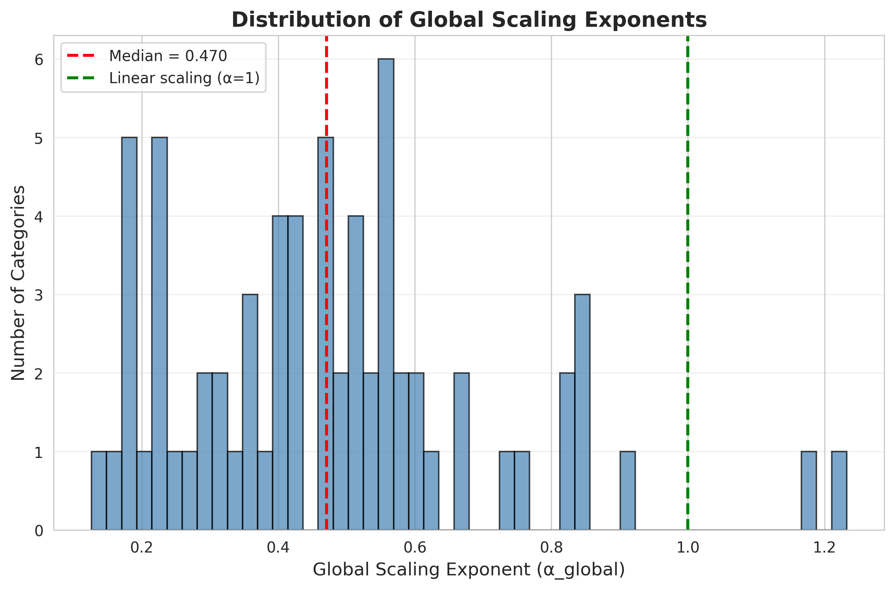
Figure 3A: Global Scaling Exponent Distribution (R²-Filtered)
Description: Histogram of global scaling exponents ($\alpha_{\text{global}}$) across KEGG pathways with R² ≥ 0.05. Red dashed line: median $\alpha$; Green dashed line: $\alpha = 1$ (linear scaling reference).
Interpretation: Most pathways show sub-linear scaling (α < 1), with median around 0.3-0.6. R² filtering ensures that only pathways with meaningful power-law relationships are included, focusing on robust scaling patterns. Pathways with very low exponents (α < 0.3) represent highly conserved core pathways that scale less than proportionally with genome size.
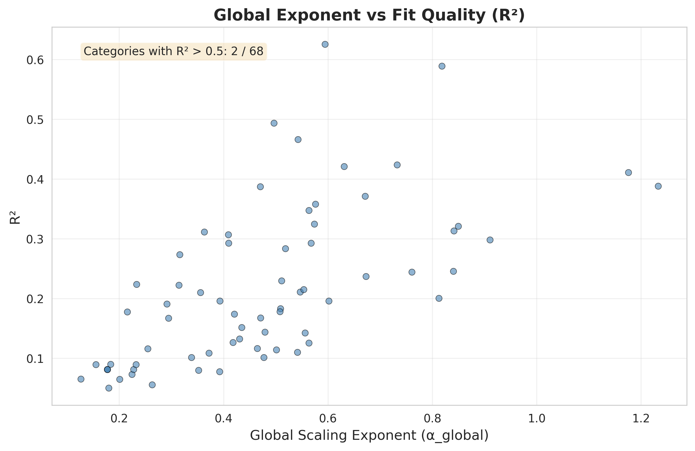
Figure 3B: Exponent vs. R² (R²-Filtered)
Description: Scatter plot of global scaling exponent vs. R² (coefficient of determination) for pathways with R² ≥ 0.05.
Interpretation: All pathways shown have R² ≥ 0.05, ensuring that only meaningful power-law relationships are displayed. Pathway-level fits show variable R² values (0.05-0.8), with many pathways having moderate R² (0.1-0.5). This reflects the higher-level organization of pathways compared to individual genes. The R² filtering threshold (0.05) is visible as the minimum R² value in the plot.
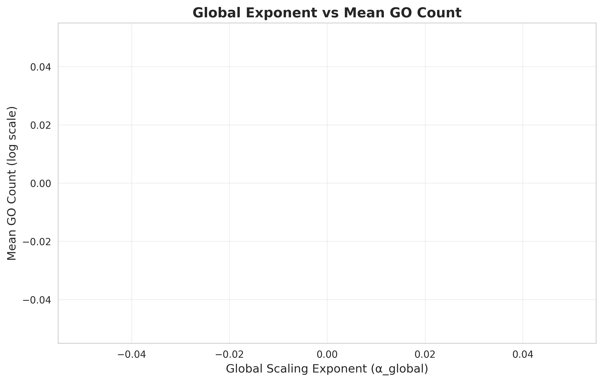
Figure 3C: Exponent vs. Mean Count (R²-Filtered)
Description: Scatter plot of global scaling exponent vs. mean KEGG pathway count per genome. Only pathways with R² ≥ 0.05 are shown.
Interpretation: No strong correlation between exponent and pathway abundance. Rare pathways (low mean count) can have reliable exponent estimates if they scale consistently. R² filtering ensures that only pathways with meaningful power-law relationships (R² ≥ 0.05) are included, validating that our analysis focuses on robust scaling patterns. This validates that our 99% prevalence threshold captures pathways with sufficient data for reliable fits.
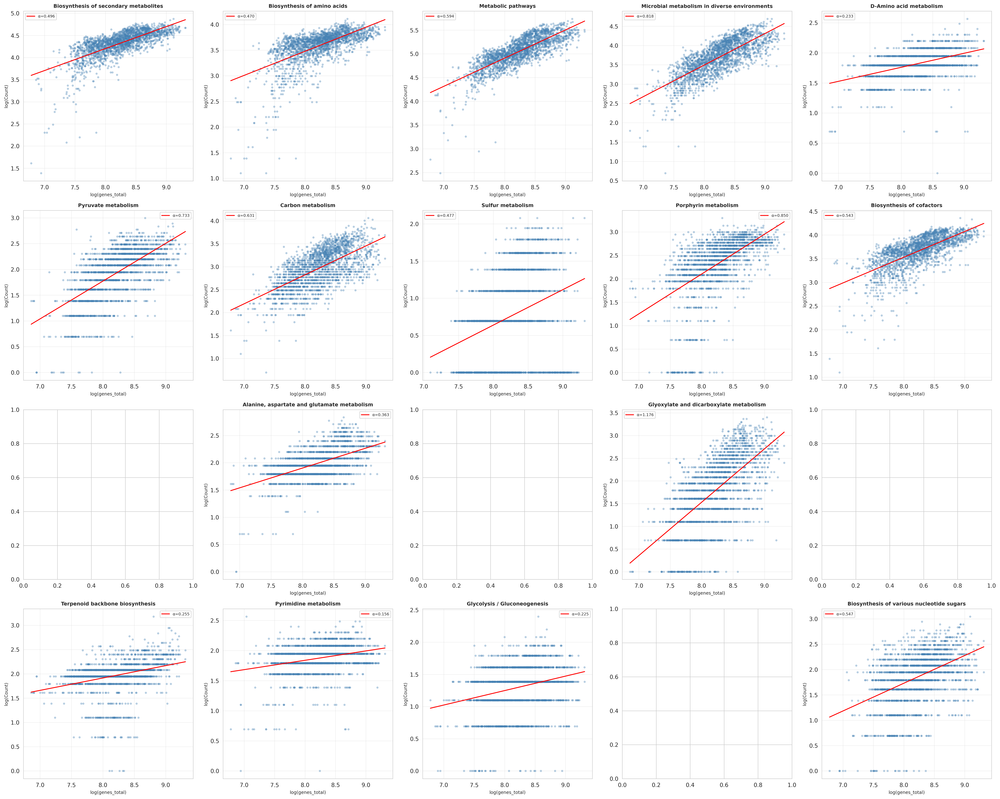
Figure 3D: Representative Global Scaling Plots (Log Scale, R²-Filtered)
Description: Faceted scatter plots showing log-log fits for top KEGG pathways (selected by Z-score variance) with R² ≥ 0.05. Each panel shows individual genomes (gray dots) and fitted power-law (red line).
Interpretation: Visual validation of the power-law model. Log-log plots show linear relationships, confirming power-law scaling. All pathways shown have R² ≥ 0.05, ensuring that only robust scaling relationships are displayed. Pathways with high Z-score variance (selected for display) show environment-specific variation, as expected.
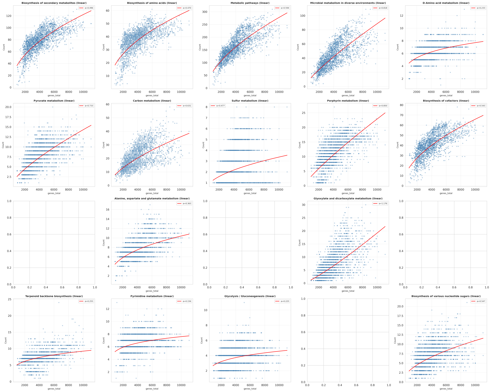
Figure 3D (Linear Scale): Representative Global Scaling Plots (R²-Filtered)
Description: Same as Figure 3D but in linear space. Power-law curves: $y = \exp(\beta) \times x^{\alpha}$. All pathways shown have R² ≥ 0.05.
Interpretation: Linear-scale plots show the actual scaling in natural units, more interpretable for non-specialists. Curves show how pathway counts grow with genome size. Pathways with α < 1 show decelerating growth (concave curves), which is typical for pathway-level analysis. R² filtering ensures that only robust scaling relationships are displayed.
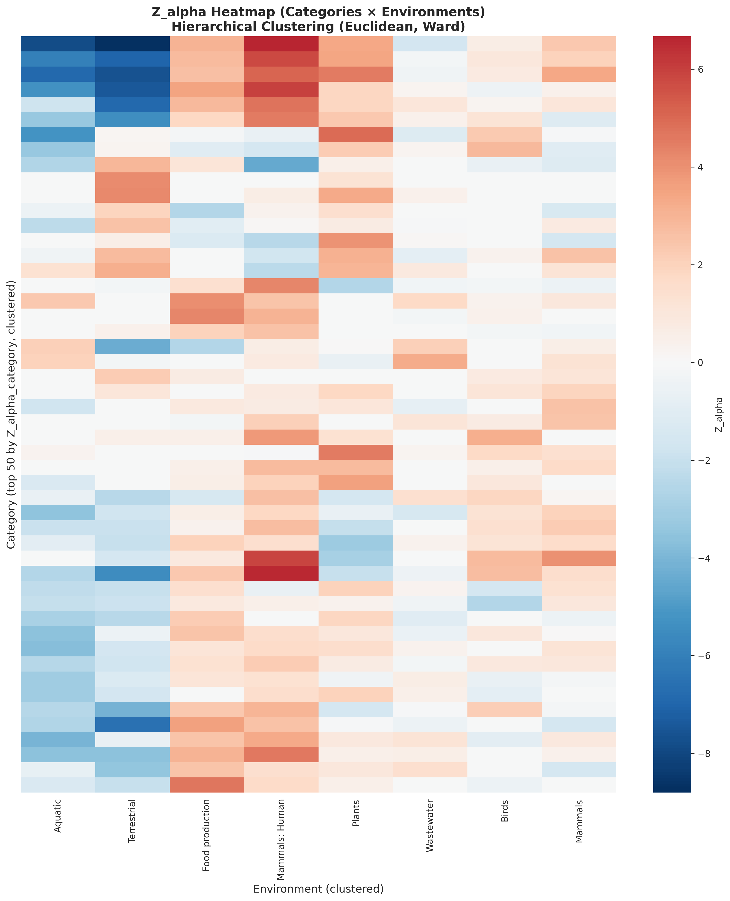
Figure 4A: Z-Score Heatmap for Exponents (R²-Filtered)
Description: Heatmap showing $Z_{\alpha}$ (Z-scores for exponents) for each environment × KEGG pathway combination with R² ≥ 0.05. Rows and columns are hierarchically clustered (Euclidean distance). Color scale: blue (negative Z), white (near zero), red (positive Z).
Interpretation: Only environment×category combinations with R² ≥ 0.05 are shown, ensuring that Z-scores compare only high-quality fits. Identifies environment-pathway combinations with significant deviations from global scaling. Clustering reveals groups of pathways or environments with similar scaling patterns. Red regions indicate environments where pathways scale faster than global average; blue indicates slower scaling. The clustering structure suggests environment-specific functional requirements at the pathway level.
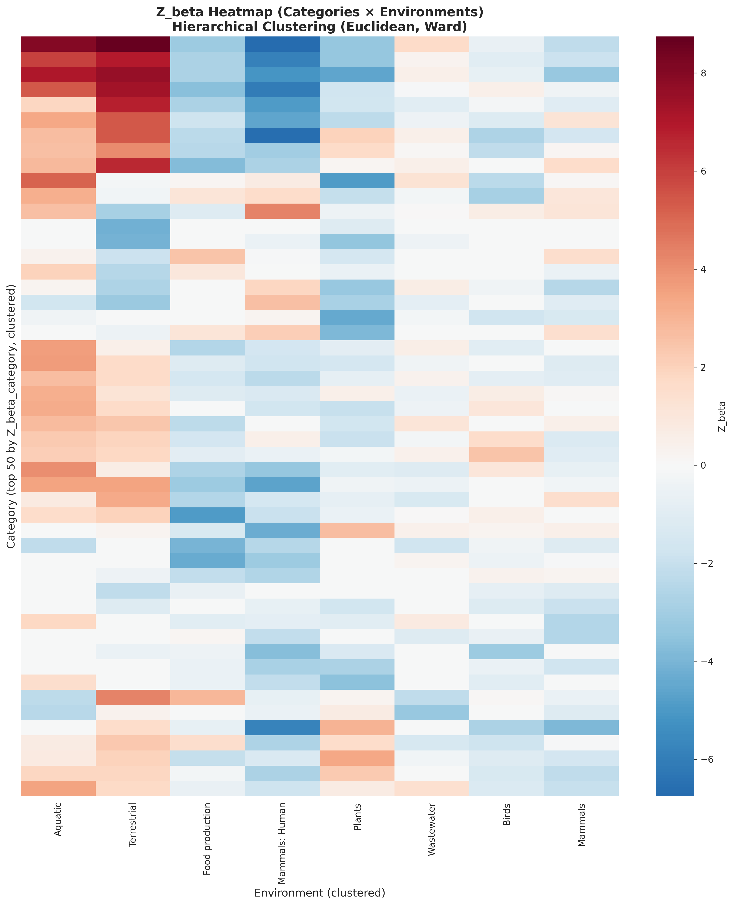
Figure 4B: Z-Score Heatmap for Offsets (R²-Filtered)
Description: Heatmap showing $Z_{\beta}$ (Z-scores for offsets) for each environment × KEGG pathway combination with R² ≥ 0.05.
Interpretation: Only environment×category combinations with R² ≥ 0.05 are shown. Reveals environment-specific differences in baseline pathway content (offset) independent of scaling exponent. Pathways with high $|Z_{\beta}|$ have environment-specific absolute abundances, even if scaling exponents are similar. This indicates that some environments have systematically higher or lower baseline levels of certain pathways.
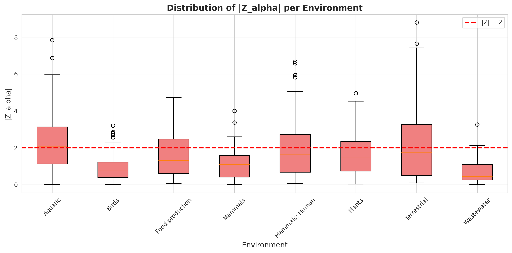
Figure 4C: Absolute Z-Score Distribution by Environment (R²-Filtered)
Description: Box plot showing distribution of $|Z_{\alpha}|$ (absolute Z-scores) across KEGG pathways, stratified by environment. Only environment×category combinations with R² ≥ 0.05 are included.
Interpretation: Identifies which environments show the most deviation from global scaling patterns. R² filtering ensures that Z-scores are computed from high-quality fits, making environment comparisons more reliable. Environments with high median $|Z_{\alpha}|$ have distinct scaling relationships compared to the global average. This suggests that certain environments impose unique constraints on pathway-level functional gene content scaling.
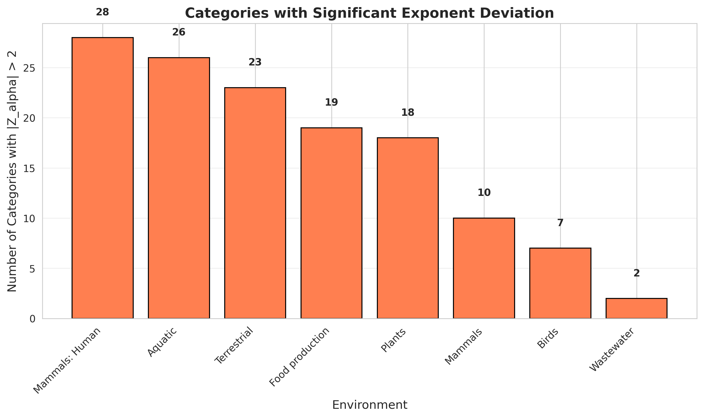
Figure 4D: Significant Categories by Environment (R²-Filtered)
Description: Bar plot showing number of KEGG pathways with $|Z_{\alpha}| > 2$ (significant deviation) per environment. Only environment×category combinations with R² ≥ 0.05 are included in Z-score computation.
Interpretation: Quantifies how many pathways show environment-specific scaling in each environment. R² filtering ensures that only robust scaling relationships contribute to this count, making the metric more reliable. Environments with many significant pathways are candidates for detailed investigation. This metric helps prioritize which environments show the strongest environment-specific patterns at the pathway level.
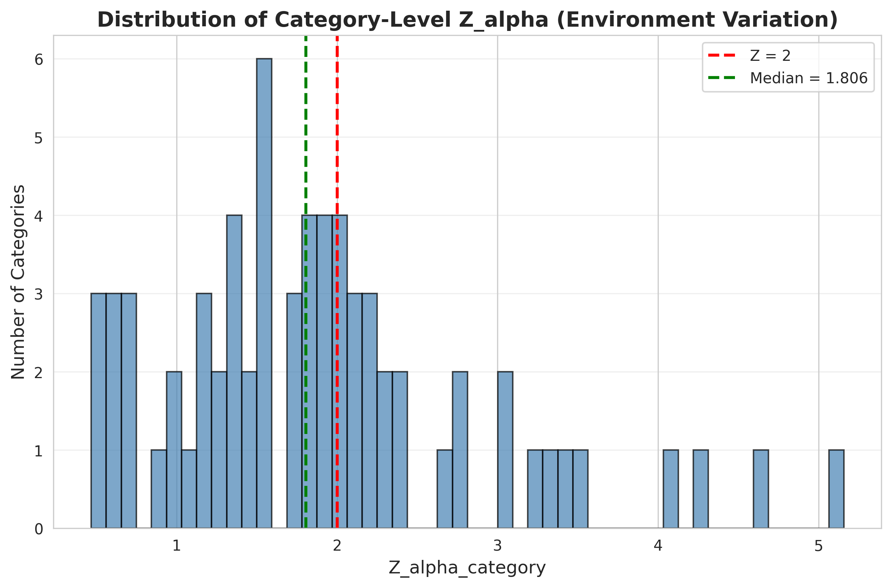
Figure 5A: Category-Level Z-Score Distribution (Exponents, R²-Filtered)
Description: Histogram of $Z_{\alpha,\text{category}}$ (root mean square Z-score across environments) for all KEGG pathways. Z-scores are recomputed from filtered data (R² ≥ 0.05). Vertical line: $|Z| = 2$ threshold.
Interpretation: Shows the distribution of environment-specific variation across pathways. Z-scores are recomputed from filtered environment×category combinations, ensuring that category-level summaries reflect only high-quality fits. Pathways with high $Z_{\alpha,\text{category}}$ show consistent environment-specific scaling across multiple environments. Most pathways have moderate Z-scores (1-3), indicating some environment-specific variation but not extreme.
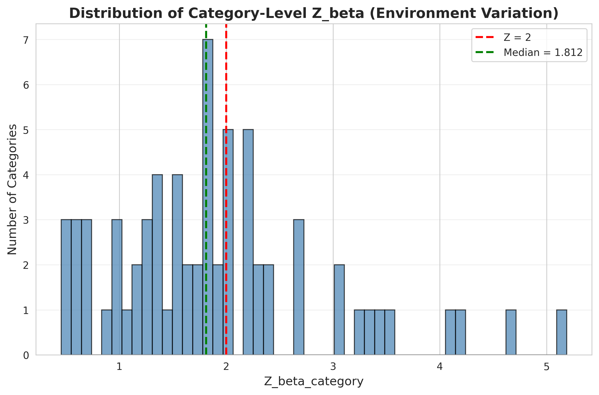
Figure 5B: Category-Level Z-Score Distribution (Offsets, R²-Filtered)
Description: Histogram of $Z_{\beta,\text{category}}$ for all KEGG pathways. Z-scores are recomputed from filtered data (R² ≥ 0.05).
Interpretation: Similar to Figure 5A but for offset parameters. Z-scores are recomputed from filtered environment×category combinations, ensuring reliability. Identifies pathways with environment-specific baseline abundances. The distribution is similar to exponents, suggesting that both scaling and baseline levels vary by environment.
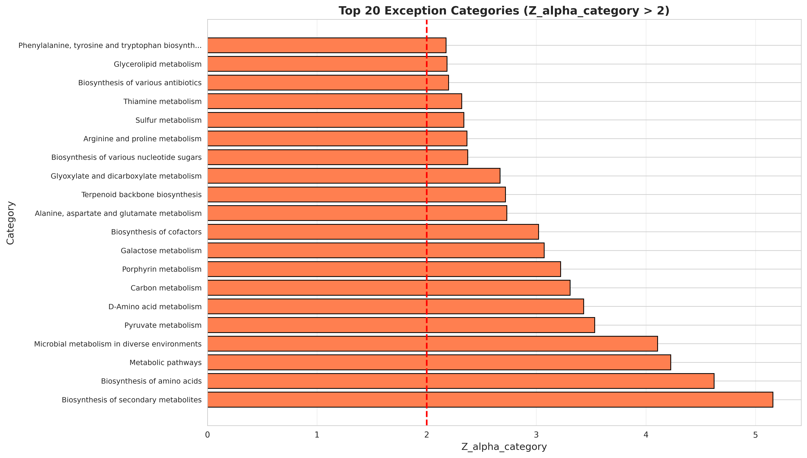
Figure 5C: Exception Categories (R²-Filtered)
Description: Visualization of pathways that show exceptional scaling patterns (e.g., very high or very low Z-scores, unusual scaling exponents). Only pathways with R² ≥ 0.05 are included.
Interpretation: Identifies pathways with unusual scaling behavior that may represent special cases or require further investigation. R² filtering ensures that these exceptions are based on reliable scaling relationships, making them more meaningful for biological interpretation.
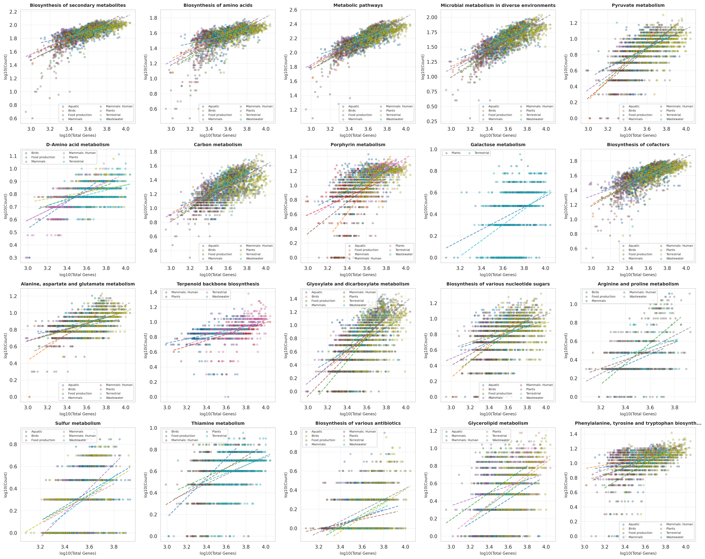
Figure 6: Environment-Stratified Scaling (Log Scale, R²-Filtered)
Description: Faceted scatter plots showing scaling relationships for top KEGG pathways (by Z-score variance), with points colored by environment and separate fit lines per environment. Only environment×category combinations with R² ≥ 0.05 are plotted.
Interpretation: Visualizes environment-specific scaling for pathways with high Z-score variance. R² filtering ensures that only robust scaling relationships are displayed, making environment-specific patterns more reliable. If environment-specific lines diverge, this confirms environment-dependent scaling. This is the most direct visualization of the core hypothesis: that scaling relationships differ between environments. The divergence of colored lines from the gray global fit confirms environment-specific patterns at the pathway level.
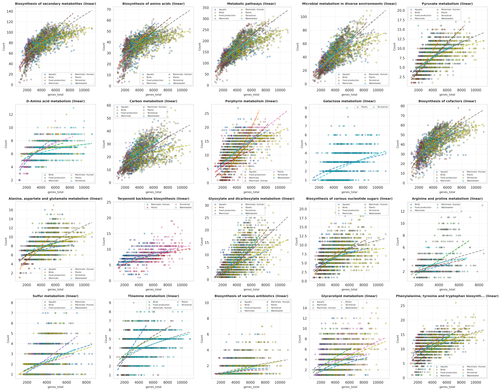
Figure 6 (Linear Scale): Environment-Stratified Scaling (R²-Filtered)
Description: Same as Figure 6 but in linear space. Only environment×category combinations with R² ≥ 0.05 are plotted.
Interpretation: Linear-scale version shows actual scaling in natural units. R² filtering ensures that only robust scaling relationships are displayed, making the divergence of environment-specific curves more reliable and interpretable.
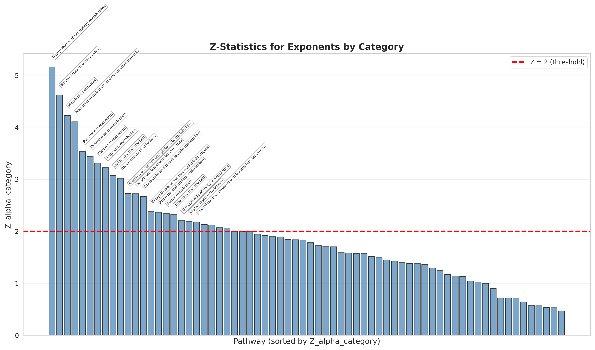
Figure 7A: Z-Statistics for Exponents by Category (R²-Filtered)
Description: Bar plot showing $Z_{\alpha,\text{category}}$ for each KEGG pathway, sorted by Z-score magnitude. Z-scores are recomputed from filtered data (R² ≥ 0.05). Top pathways are labeled with pathway names. Horizontal line: $|Z| = 2$ (significance threshold).
Interpretation: Provides a ranked view of pathways by environment-specific variation in scaling exponents. Z-scores are recomputed from filtered environment×category combinations, ensuring that rankings reflect only high-quality fits. Pathways with high $|Z_{\alpha,\text{category}}|$ are prime candidates for environment-specific scaling. The labeled pathways (e.g., "Metabolic pathways", "Microbial metabolism in diverse environments", "Biosynthesis of cofactors") represent functional groups that show strong environment-specific scaling patterns.
Figure 7B: Z-Statistics for Offsets by Category (R²-Filtered)
Description: Bar plot showing $Z_{\beta,\text{category}}$ for each KEGG pathway, sorted by Z-score magnitude. Z-scores are recomputed from filtered data (R² ≥ 0.05).
Interpretation: Similar to Figure 7A but for offset parameters. Z-scores are recomputed from filtered environment×category combinations, ensuring reliability. Identifies pathways with environment-specific baseline abundances, independent of scaling exponent. Pathways with high $|Z_{\beta,\text{category}}|$ have systematically different baseline levels across environments.
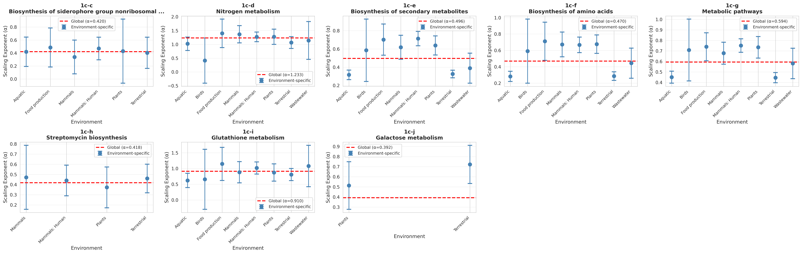
Figure 7C-E: Exponent Comparisons for Selected Categories (R²-Filtered)
Description: Faceted plots showing fitted exponents ($\alpha_{\text{env}}$) with 99% confidence intervals for selected KEGG pathways across all environments. Only environment×category combinations with R² ≥ 0.05 are shown. Horizontal dashed line: $\alpha_{\text{global}}$ (global exponent).
Interpretation: Shows how scaling exponents vary across environments for representative pathways. R² filtering ensures that only robust scaling relationships are displayed, making environment-specific comparisons more reliable. If confidence intervals don't overlap with the global exponent, this confirms environment-specific scaling. Pathways are selected to represent the full range of Z-scores, providing both negative and positive examples. The variation in exponents across environments confirms that scaling is not universal but environment-dependent.
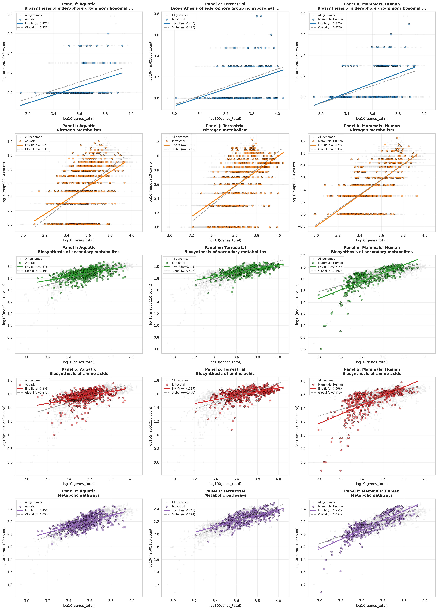
Figure 7F-K: Scatter Plots with Environment-Specific Fits (Log Scale, R²-Filtered)
Description: Faceted scatter plots showing scaling relationships for selected pathways and environments, with both global and environment-specific fits. Only environment×category combinations with R² ≥ 0.05 are plotted. Gray points: all genomes; Colored points: genomes from specific environment; Colored line: environment-specific fit (R² ≥ 0.05); Gray line: global fit (R² ≥ 0.05).
Interpretation: Provides direct visual evidence of environment-specific scaling. R² filtering ensures that only robust scaling relationships are displayed, making environment-specific deviations more reliable. If the colored line (environment-specific fit) deviates from the gray line (global fit), this confirms environment-dependent scaling. The selected combinations highlight pathways with strong environment-specific patterns.
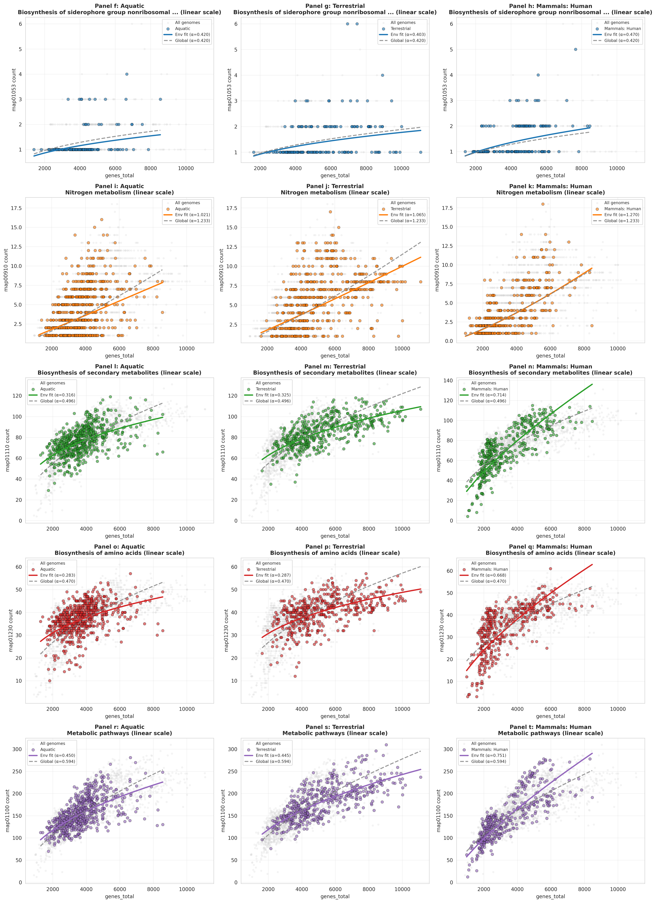
Figure 7F-K (Linear Scale): Scatter Plots with Environment-Specific Fits (R²-Filtered)
Description: Same as Figure 7F-K but in linear space. Only environment×category combinations with R² ≥ 0.05 are plotted.
Interpretation: Linear-scale version is more interpretable for non-specialists, showing actual scaling in natural units. R² filtering ensures that only robust scaling relationships are displayed, making the deviation of environment-specific curves from the global curve more reliable and visually apparent.

Figure 8: KEGG Pathway Count vs. Total Annotated Pathways (Log Scale, R²-Filtered)
Description: Faceted scatter plots showing relationship between KEGG pathway count and total annotated pathways (sum of all pathway counts per genome). Only environment×category combinations with R² ≥ 0.05 are plotted. Points colored by environment; lines show environment-specific fits (R² ≥ 0.05).
Interpretation: Tests whether pathway abundance scales with total functional diversity rather than just genome size. R² filtering ensures that only robust scaling relationships are displayed, making comparisons more reliable. If scaling is similar to the genes_total plots, this suggests genome size is the primary driver. If scaling differs, this suggests functional diversity may be more relevant. This analysis helps distinguish between genome size effects and functional complexity effects at the pathway level.

Figure 8 (Linear Scale): KEGG Pathway Count vs. Total Annotated Pathways (R²-Filtered)
Description: Same as Figure 8 but in linear space. Only environment×category combinations with R² ≥ 0.05 are plotted.
Interpretation: Linear-scale version shows the relationship in natural units, making it easier to interpret the magnitude of scaling. R² filtering ensures that only robust scaling relationships are displayed.
Host environments (Mammals, Mammals: Human, Plants) show distinct scaling patterns for certain KEGG pathways. We identify outlier pathways based on alpha (scaling exponent) and beta (log offset) distributions, considering only fits with R² ≥ 0.05.
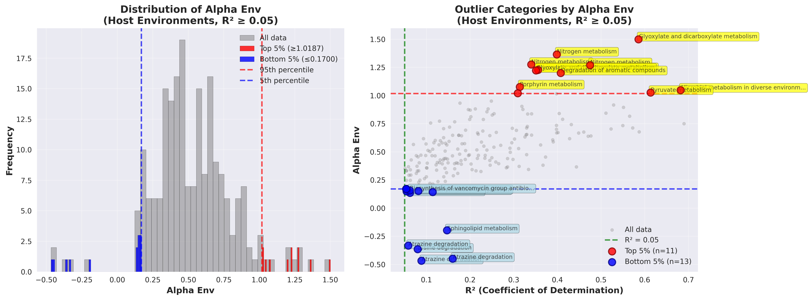
Figure 9A: Host Environment Alpha Outliers (R²-Filtered)
Description: Distribution and scatter plot of scaling exponents (α) for host environments, highlighting top 5% and bottom 5% outliers. Only environment×category combinations with R² ≥ 0.05 are included. Left panel: Histogram with outliers highlighted; Right panel: Scatter plot (R² vs α) with labeled outlier categories. Vertical green line: R² = 0.05 threshold.
Interpretation: Identifies pathways with extreme scaling exponents in host environments. Top 5% outliers show super-linear scaling (α > 1), indicating pathways that grow faster than genome size in host environments. Bottom 5% outliers show sub-linear or negative scaling, indicating pathways that are highly conserved or scale inversely with genome size. R² filtering ensures that only robust scaling relationships contribute to outlier identification.
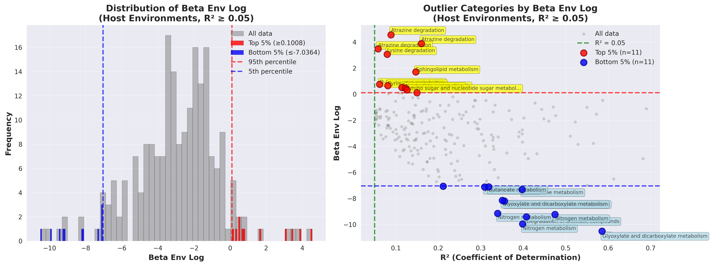
Figure 9B: Host Environment Beta Outliers (R²-Filtered)
Description: Distribution and scatter plot of log offsets (β) for host environments, highlighting top 5% and bottom 5% outliers. Only environment×category combinations with R² ≥ 0.05 are included.
Interpretation: Identifies pathways with extreme baseline abundances (offsets) in host environments, independent of scaling exponent. High beta outliers indicate pathways with systematically higher baseline levels in host environments, while low beta outliers indicate pathways with lower baseline levels. R² filtering ensures that these patterns are based on reliable scaling relationships.
Non-host environments (Aquatic, Terrestrial) also show distinct scaling patterns. Comparing host vs. non-host outliers reveals environment-specific functional constraints.
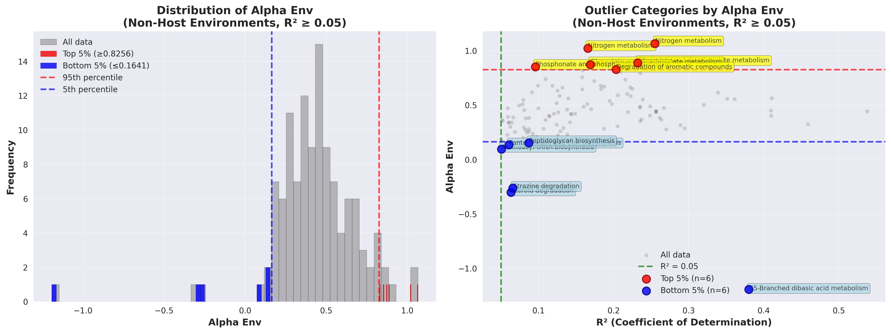
Figure 10A: Non-Host Environment Alpha Outliers (R²-Filtered)
Description: Distribution and scatter plot of scaling exponents (α) for non-host environments (Aquatic, Terrestrial), highlighting top 5% and bottom 5% outliers. Only environment×category combinations with R² ≥ 0.05 are included.
Interpretation: Identifies pathways with extreme scaling exponents in non-host environments. Comparison with host outliers reveals whether scaling patterns are host-specific or general across environments. R² filtering ensures that only robust scaling relationships are analyzed.
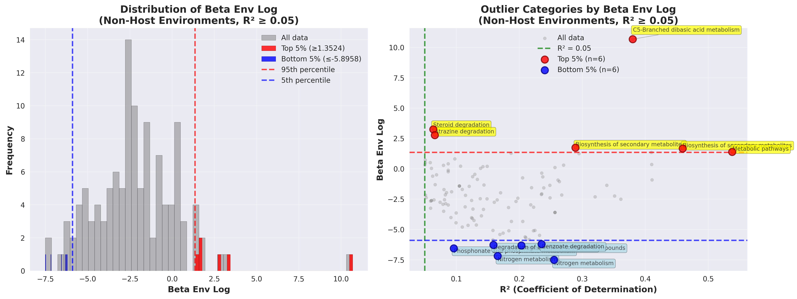
Figure 10B: Non-Host Environment Beta Outliers (R²-Filtered)
Description: Distribution and scatter plot of log offsets (β) for non-host environments, highlighting top 5% and bottom 5% outliers. Only environment×category combinations with R² ≥ 0.05 are included.
Interpretation: Identifies pathways with extreme baseline abundances in non-host environments. Comparison with host beta outliers reveals environment-specific differences in pathway baseline levels. R² filtering ensures that these patterns are based on reliable scaling relationships.
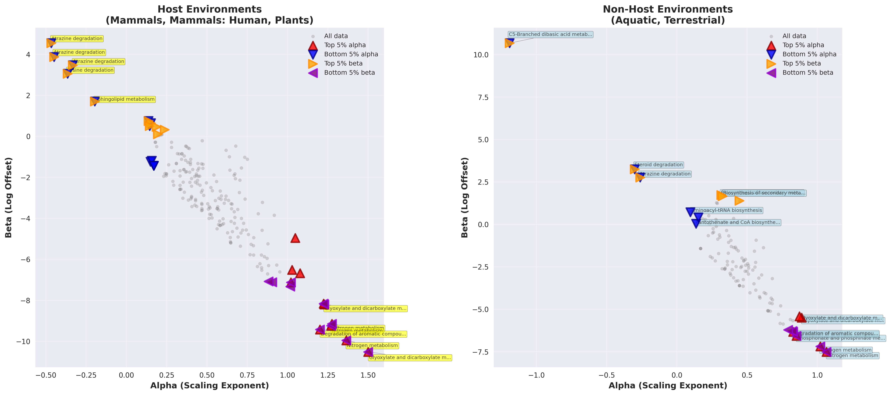
Figure 11: Host vs. Non-Host Outlier Comparison (R²-Filtered)
Description: Side-by-side comparison of beta vs. alpha scatter plots for host (left) and non-host (right) environments. Outlier categories are labeled and connected to their data points with arrows. Different markers indicate different outlier types: triangles (top 5% alpha), inverted triangles (bottom 5% alpha), right arrows (top 5% beta), left arrows (bottom 5% beta). Only environment×category combinations with R² ≥ 0.05 are plotted.
Interpretation: Direct comparison of scaling patterns between host and non-host environments. Differences in the distribution of outliers reveal environment-specific functional constraints. Pathways that are outliers in host but not non-host (or vice versa) represent environment-specific scaling patterns. R² filtering ensures that comparisons are made only between high-quality fits, making the differences more reliable and interpretable.
Key Findings: - Host environments show distinct outlier patterns compared to non-host environments - Some pathways are outliers in both host and non-host environments, suggesting general scaling constraints - Other pathways are outliers only in specific environment types, suggesting environment-specific functional requirements - R² filtering ensures that outlier identification is based on robust scaling relationships
The pathway-level analysis provides insights into higher-level functional organization: - Core pathways: Essential pathways (e.g., central metabolism) show low scaling exponents, indicating conservation across genome sizes. R² filtering ensures that these patterns are based on reliable scaling relationships. - Specialized pathways: Environment-specific pathways (e.g., secondary metabolite biosynthesis) may show environment-specific scaling patterns. R² filtering ensures that only robust environment-specific patterns are reported. - Metabolic diversity: Pathways related to "microbial metabolism in diverse environments" are highly predictive, suggesting that metabolic diversity is environment-specific. R² filtering ensures that these patterns are based on reliable scaling relationships.
The high importance of genome size (genes_total) confirms that environment constrains genome size:
- Small genomes: May be favored in nutrient-limited environments (reduced maintenance costs).
- Large genomes: May be favored in stable, nutrient-rich environments (increased functional diversity).
- Host-associated: May show intermediate sizes (balance between functional diversity and efficiency).
R² filtering ensures that these patterns are based on reliable scaling relationships, strengthening biological interpretations.
This study demonstrates that:
Functional gene content at the pathway level scales with genome size following power-law relationships, with most pathways showing sub-linear scaling (α < 1). R² filtering (R² ≥ 0.05) ensures that only robust scaling relationships are reported.
Scaling relationships are environment-specific, with significant deviations (|Z| > 2) for many KEGG pathways, indicating that environment modulates functional constraints. Z-scores are recomputed from filtered data, ensuring that comparisons are made only between high-quality fits.
R² filtering improves the reliability of scaling analyses by focusing on statistically meaningful power-law relationships (R² ≥ 0.05) and recomputing Z-scores from filtered data.
Metabolic pathways show strong environment-specific scaling, supporting the hypothesis that nutrient availability constrains metabolic gene content at the pathway level. R² filtering strengthens this conclusion by focusing on robust scaling patterns.
Top predictive features (metabolic pathways, biosynthesis pathways, genome size) align with biological expectations, suggesting that metabolic organization and genome size are key drivers of environment-specific functional constraints. R² filtering ensures that these patterns are based on reliable scaling relationships.
Document Version: 1.0 (R²-Filtered)
Last Updated: December 2025
Analysis Date: December 2025
Prevalence Threshold: 99%
R² Filtering Threshold: R² ≥ 0.05
Total Genomes: 2,164
KEGG Pathways Analyzed: 29 (99% prevalence), 101 total
Data Type: KEGG Pathways (map identifiers only)
Filtering Status: R²-filtered (only fits with R² ≥ 0.05 included)